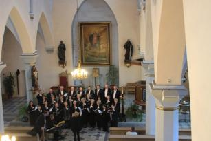

A tymczasem w Cameracie...
.
2012-04-30
6.00 trzeba wstawać i zbierać się do wyjazdu a tak się smacznie spało. Śniadanie o 7.30 i w drogę. Jedziemy do Tallina w Estonii, czyli kolejne państwo przed nami i około 4 godz. jazdy, bo to 310 km. Jedziemy rozmawiając, czasami coś śpiewamy, recytujemy śmieszne wiersze, fraszki i czas płynie błyskawicznie. Już jesteśmy na miejscu. Hotel jeszcze nie przygotowany, więc krótka próba i spacer.
Auto z ambasady przyjeżdża pod hotel, aby nas pilotować do kościoła. Przychodzimy przed mszą i przygotowujemy się do występu. Trzeba podłączyć instrument , sprawdzić akustykę, podjąć decyzję jak i gdzie stoimy.

Koncert nasz otwiera - jak podkreślił Grzegorz M. Poznański, Ambasador RP w Republice Estońskiej - cykl koncertów chórów polskich w Tallinie. Organizatorem koncertu jest pani Sławomira Borowska-Peterson – specjalista ds kultury i promocji w Ambasadzie RP w Tallinie.
Oprócz nas występuje również zaproszony przez chór gość, pan Konrad Szota sam i w duecie z
małżonką Izabelą Szotą, naszą dyrygentką. Akompaniuje nam i solistom nasz gość pani Maria Rydzewska.
Teraz chwila wytchnienia dla chóru, bo gra na organach „Preambulum” Jana Podbielskiego – Zenon Kulik. Jak on gra… żeby to wiedzieć, to trzeba posłuchać i popatrzeć na twarze słuchających.A teraz AVE MARIA – Giulio Caccini , w wykonaniu naszej pani dyrygent Izabeli Szoty, przy akompaniamencie na organach Zenona Kulika. Ten utwór już do końca wycisnął łzy naszym słuchaczom . . . a i Camerata miała niewyraźne miny.
Jeszcze chór i kończymy. Słuchacze są oczarowani i wzruszeni. Tak kończy się nasz występ. Idziemy do Ambasady RP, gdzie są nasze ubrania. Po drodze zostaliśmy zaproszeni do zwiedzenia wystawy o Janie Pawle II.

© Stowarzyszenie Muzyczne Chór Camerata Wieliczka